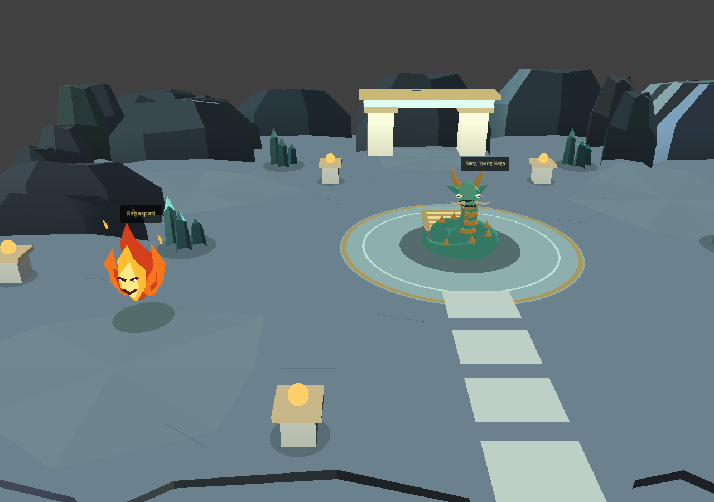
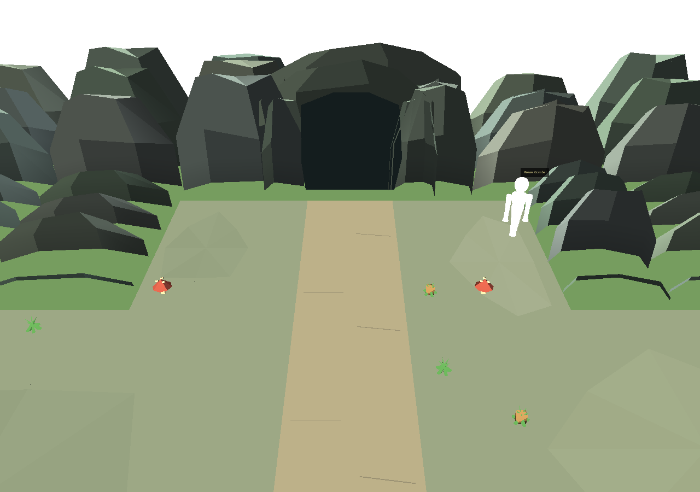
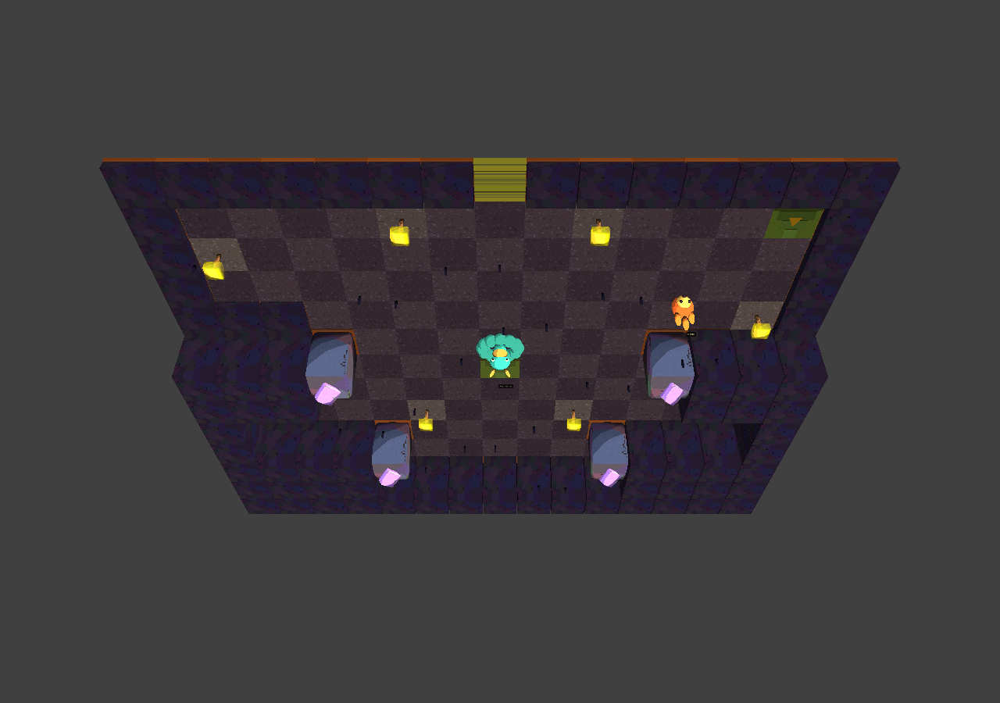

Acuan: Rune Factory 4 Special. Identitas Naga dan Banaspati tetap milik Karsa.
Putaran 3: kristal gua dibangun ulang dari gumpalan membulat menjadi prisma berujung meruncing, dan tint-nya diturunkan ke bawah plafon clipping shader. Panggilan pembaruan penunggu yang tergandakan dihapus. Sembilan kelompok tes lolos.
Belum dinyatakan melampaui acuan. Kritikus mengetahui asal gambar: penilaian saat ini bukan perbandingan buta. Langit-langit gua masih pita gelap rata, dan gapura pintu gua belum punya kedalaman.
Plafon clipping. smooth_shader mengalikan warna dengan ambient + sun_color * diff, puncaknya 0,45 + 1,05 = 1,50. Tint kristal lama (kanal G 201..225) dikali 1,50 menembus 1,0, sehingga faset paling terang terpotong pucat kelabu dan pita toon-nya hilang — kristal terbaca rata. Tint baru duduk di 0,988.
Panggilan ganda. update_guardian() pernah dipanggil dua kali per frame, sehingga _guardian_time maju 2×dt dan napas naga berjalan dua kali kecepatan rancangan. Bug ini tidak terbaca dari screenshot, jadi sekarang dihitung.
Kerapuhan tersembunyi. Bobbing banaspati dulu bergantung pada hasattr(actor, '_guardian_visual'), yang hanya benar secara kebetulan karena cabang naga_bijak return lebih awal. Sekarang ada penanda eksplisit _guardian_floats.



Render offscreen memakai aset asli melalui memory VFS pada mesin ini. Perbedaan dari pemuatan normal dan hasil pengujian dicatat, bukan disembunyikan.
Dua pemeriksaan baru dibuktikan punya gigi dengan menyuntikkan kembali bug-nya: panggilan ganda menghasilkan {'naga_bijak': 2, 'banaspati': 2}, dan tint lama menghasilkan puncak 1.253 > 1,0. Keduanya gagal seperti seharusnya, lalu file dipulihkan.